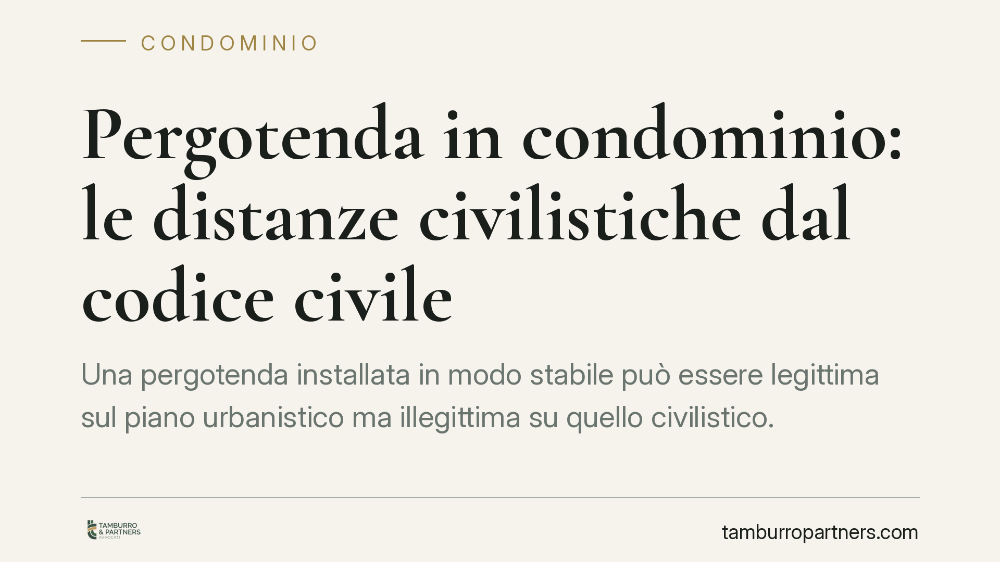

Pergotenda in condominio: le distanze civilistiche dal codice civile
Una pergotenda installata in modo stabile può essere legittima sul piano urbanistico ma illegittima su quello civilistico. Una recente pronuncia del Tribunale di Trani ha ribadito che il rispetto delle distanze a tutela della veduta del vicino prescinde dalle autorizzazioni amministrative. Per chi vive in condominio è una distinzione decisiva, perché incide sul rischio di un ordine di rimozione.

Il caso: pergotenda e distanze in condominio
Una pergotenda è una struttura leggera, di norma retrattile, pensata per ombreggiare terrazzi e balconi. La sua diffusione ha moltiplicato i contenziosi tra condòmini, soprattutto quando il manufatto si affaccia sulla proprietà o sulla veduta altrui.
Il punto affrontato dalla giurisprudenza, da ultimo con una recente sentenza del Tribunale di Trani (estremi in corso di verifica redazionale), è netto: il fatto che la pergotenda rientri nell'edilizia libera, e quindi non richieda titoli edilizi, non la esonera dal rispetto delle distanze civilistiche a tutela del diritto di veduta. Sono due piani distinti, che non vanno confusi.
Profilo urbanistico e profilo civilistico: due piani diversi
Il profilo urbanistico riguarda il rapporto tra il privato e la pubblica amministrazione: stabilisce se per installare il manufatto serva un titolo edilizio o se l'intervento sia libero.
Il profilo civilistico riguarda invece il rapporto tra privati, cioè tra vicini e condòmini. Qui operano le norme del codice civile sulle distanze. Una pergotenda può essere perfettamente regolare sotto il profilo amministrativo e, nello stesso tempo, violare i diritti del vicino sotto il profilo civilistico. L'assenza di una sanzione edilizia non impedisce al vicino di agire in sede civile.
Le norme sulle distanze: artt. 905 e 907 c.c.
È qui che va fatta chiarezza sulle norme richiamate.
L'art. 905 c.c. fissa la distanza minima per aprire vedute dirette verso il fondo del vicino: non si possono avere vedute dirette a distanza inferiore a un metro e mezzo dal confine. La soglia di tre metri ricorre invece per le vedute oblique (art. 906 c.c.) e, in generale, come misura di riferimento nei rapporti con le vedute preesistenti.
L'art. 907 c.c. disciplina un profilo diverso e speculare: quando il vicino ha acquisito il diritto di avere una veduta diretta sul fondo altrui, chi vuole costruire su quel fondo non può farlo a distanza inferiore a tre metri, misurata secondo i criteri degli artt. 905 e 906 c.c. In altre parole, la soglia dei tre metri dell'art. 907 c.c. non è una regola autonoma: tutela la veduta già esistente del vicino e rinvia al regime generale delle distanze.
La qualificazione della pergotenda diventa quindi decisiva. Un telo retrattile, privo di struttura rigida permanente, difficilmente costituisce "costruzione" rilevante ai fini delle distanze. Un manufatto stabile, con elementi fissi e carattere di permanenza, può invece essere trattato come costruzione e soggiacere alle regole degli artt. 905 e 907 c.c.
Cosa cambia in concreto per chi vive in condominio
La conseguenza pratica è che l'autorizzazione amministrativa, o la natura di edilizia libera dell'intervento, non mette al riparo da un'azione civile del vicino. Se la pergotenda stabile riduce o compromette una veduta tutelata, il condòmino leso può chiederne la rimozione o l'arretramento, oltre all'eventuale risarcimento.
Il rischio economico non è marginale: un ordine di rimozione di un manufatto già installato è quasi sempre più oneroso di una modifica progettuale decisa in anticipo.
Cosa fare in concreto sulle distanze della pergotenda
- Per chi vuole installare la pergotenda: è opportuno verificare preventivamente, oltre al profilo urbanistico, la natura del manufatto (leggero e retrattile oppure stabile) e la posizione rispetto alle vedute dei vicini.
- Per il condòmino che subisce l'installazione: è utile documentare con fotografie e misurazioni la distanza del manufatto dalla propria veduta e la data di realizzazione dell'opera.
- Per l'amministratore di condominio: è prudente verificare se l'installazione incida su parti comuni o su regole del regolamento condominiale, informando l'assemblea nei casi dubbi.
- In via generale: conviene distinguere con attenzione tra conformità edilizia e rispetto delle distanze civilistiche, perché la prima non assorbe la seconda.
- Sulla documentazione: è consigliabile conservare titoli, elaborati tecnici e corrispondenza, elementi spesso decisivi in un eventuale giudizio.
Un equilibrio tra esigenze opposte
La materia richiede un bilanciamento tra il diritto di godere della propria proprietà e il diritto del vicino alla veduta. La valutazione è sempre concreta e dipende dalle caratteristiche effettive del manufatto e dei luoghi.
Contributo informativo a cura di Tamburro & Partners Avvocati - Avv. Giuseppe Tamburro. Non costituisce parere legale.
Ogni condominio ha una storia a sé.
Se gestisci un'amministrazione e vuoi un confronto su una specifica questione condominiale, scrivi allo studio. Ti rispondiamo entro un giorno lavorativo.